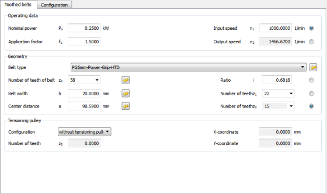

|
|
|


齿形带
使用此方法可计算并确定齿形带传动的所有方面，包括齿数和带长，同时考虑标准齿数。当您输入所需的标称传动比和/或标称轴距时，程序会计算出最佳位置。您还可以计算所需带宽，并考虑修正系数、最少齿数和啮合齿数。您还可以打印出装配细节（带弯曲试验）。每种类型带的数据都保存到文本文件中，文件名表明了其用途，可根据需要进行编辑。
您还可以对带集成钢丝绳的特殊耐应力齿形带（例如 AT5mm）进行计算。
作为一种变体，计算也可以使用第三个带轮（张紧轮）进行。您在 齿形带 选项卡中定义张紧轮的 X 和 Y 坐标。如果您打开 配置 选项卡，可以使用鼠标移动张紧轮。此时，特定的 x 和 y 值会显示在状态栏中。该带轮可根据需要布置在外侧或内侧。

图 52.1：基本数据：齿形带计算
Toothed Belt
Use this method to calculate and size all aspects of toothed belt drives, including the tooth number and belt length, while taking into account standard numbers of teeth. When you enter the required nominal ratio and/or the nominal axis distance, the program calculates the best possible positions. You can also calculate the required belt width, taking into account the correction factors, the minimum number of teeth, and the number of meshing teeth. You can also print out assembly details (belt bending test). The data for each type of belt is saved to text files, whose names indicate their purpose, which can be edited as required.
You can also perform calculations for special stress-resistant toothed belts with integrated steel ropes (e.g. AT5mm).
As a variant, the calculation can also be performed with a third pulley (tensioning pulley). You define the X and Y coordinates of the tensioning pulley in the Toothed belt tab. If you open the Configuration tab, you can use the mouse to move the tensioning pulley. In this case, the particular x and y value is displayed in the status bar. This pulley can be positioned outside or inside as required.
Figure 52.1: Basic data: Toothed belt calculation